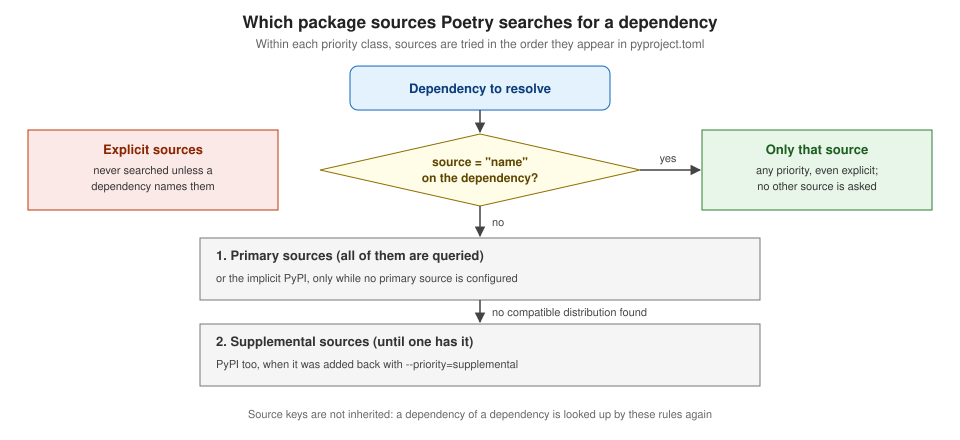

Repositories & Package Sources
|
This content was generated with the assistance of AI and should be verified against the official documentation before being relied on in production. |
Poetry separates two things that pip mixes into its --index-url options: package sources, which the project declares in
pyproject.toml to install from, and publishable repositories, which each user configures with poetry config to upload
to. This page covers both for Poetry 2.5.1. The examples ran on 2026-10-22 on Linux with CPython 3.14.6, using the
birdtally-report project and two local pypiserver indexes: birdwatch on 127.0.0.1:8082, which requires HTTP basic
authentication and holds birdtally, and internal on 127.0.0.1:8083, without authentication. Credentials come from
environment variables; scratch paths are shortened to ….

The implicit PyPI source
With no [[tool.poetry.source]] entries, every dependency comes from PyPI, which Poetry reads through its JSON API (falling back to
downloading a distribution when the published metadata is invalid). PyPI has the reserved name PyPI (any case) and a fixed URL:
poetry source add pypi https://pypi.org/simple/The URL of PyPI is fixed and cannot be set.Adding a source
poetry source add [--priority=primary|supplemental|explicit] <name> [<url>] writes a [[tool.poetry.source]] table:
poetry source add --priority=explicit birdwatch http://127.0.0.1:8082/simple/Adding source with name birdwatch.[[tool.poetry.source]]
name = "birdwatch"
url = "http://127.0.0.1:8082/simple/"
priority = "explicit"Adding a name that exists replaces it (Source with name internal already exists. Updating.). Leaving out --priority makes a
primary source and, since Poetry 2.1, prints a deprecation warning:
The default priority will change to supplemental in a future release.
Adding source with name internal.Always pass --priority. A Simple API URL needs its trailing /simple/.
poetry source show [<name>…] lists the sources from pyproject.toml (not the implicit PyPI) and poetry source remove <name>
deletes one:
poetry source remove internal
poetry source showRemoving source with name internal.
name : birdwatch
url : http://127.0.0.1:8082/simple/
priority : explicit
name : PyPI
priority : supplementalSources are a Poetry feature only: they are not written into the built package’s metadata. Installing the project with pip
(including pip install -e .) ignores them and fetches every dependency from pip’s own index.
Priorities
| Priority | Behaviour |
|---|---|
|
Searched for every dependency without a source constraint; all primary sources are queried. Configuring any primary source turns the implicit PyPI off. |
|
Searched only when no higher-priority source has a compatible distribution, in order, until one has it. Good for slow sources and for few packages. |
|
Searched only for dependencies that name it with |
Within each class the order in pyproject.toml counts. The older default = true, secondary = true and priority = "default" /
"secondary" forms (deprecated in 1.5.0 and 1.8.0) are gone in Poetry 2:
The Poetry configuration is invalid:
- tool.poetry.source[0].priority must be one of ['primary', 'supplemental', 'explicit']A primary source turns PyPI off
With the internal index added as primary, a package that only exists on PyPI cannot be found any more:
poetry source add internal http://127.0.0.1:8083/simple/
poetry add attrsCould not find a matching version of package attrsAdding PyPI back with a priority of its own (no URL) fixes it; primary would put it on a par with the internal index,
supplemental asks it only when the internal index has nothing:
poetry source add --priority=supplemental PyPI
poetry add attrsAdding source with name PyPI.
Using version ^26.1.0 for attrs
Updating dependencies
Resolving dependencies...
…
Writing lock file[[tool.poetry.source]]
name = "PyPI"
priority = "supplemental"A pypiserver started without --disable-fallback redirects requests for packages it does not have to PyPI, so a "primary only"
setup that points at it still pulls from PyPI; the first run of this example did exactly that.
Source constraints
poetry add --source <name> ties a dependency to one source. That source is the only one asked for it, whatever its priority:
export POETRY_HTTP_BASIC_BIRDWATCH_USERNAME=birdwatch
export POETRY_HTTP_BASIC_BIRDWATCH_PASSWORD=… # from your secret store
poetry add --source birdwatch birdtallyUsing version ^0.1.0 for birdtally
Updating dependencies
Resolving dependencies...
Package operations: 1 install, 0 updates, 0 removals
- Installing birdtally (0.1.0)
Writing lock fileThe constraint goes into [tool.poetry.dependencies], next to the PEP 621 entry, and the lock file records where the package
came from:
[project]
dependencies = [
"birdtally (>=0.1.0,<0.2.0)"
]
[tool.poetry.dependencies]
birdtally = {source = "birdwatch"}[package.source]
type = "legacy"
url = "http://127.0.0.1:8082/simple"
reference = "birdwatch"Without the credentials the same add fails with exit code 1:
Source (birdwatch): Authorization error accessing http://127.0.0.1:8082/simple/birdtally/
Could not find a matching version of package birdtallyTwo rules matter in practice:
-
Constraints are not inherited. If
package-acomes frominternaland depends onpackage-b, which is also only oninternal,package-bis looked up by the normal priorities. Pin it as well, with a wildcard so the version still comes frompackage-a:poetry add --source internal "package-b@*"(in a separate group if you do not want it as a main dependency). -
Dependency confusion. Someone can publish a package with your private name on PyPI. If PyPI is primary (or the implicit source) alongside your index, the resolver may pick the public one. Give every private package a source constraint, keep private-only sources
explicit, and keep PyPI out of the primary class when you can; see Supply-Chain Security.
Kinds of source
-
Simple API repositories (PEP 503), such as devpi, pypiserver, Artifactory, Nexus, GitLab, AWS CodeArtifact or Azure Artifacts. When the index also serves PEP 658 metadata (supported since 1.2.0), Poetry reads it instead of downloading each candidate. When it serves no hashes in its links, Poetry downloads every candidate wheel to hash it, because
poetry.lockis platform-independent and needs the metadata of every platform’s files: resolution against such an index can be slow. -
Single page link sources (1.2.0): one HTML page of links, as some projects publish their binary wheels, for example
poetry source add --priority=explicit jax https://storage.googleapis.com/jax-releases/jax_releases.html.
Credentials
A source and a publishable repository with the same name share credentials, looked up in this order: POETRY_HTTP_BASIC_<NAME>_*
or POETRY_PYPI_TOKEN_<NAME> environment variables, then the system keyring (service name poetry-repository-<name>), then
auth.toml in the config directory.
poetry config http-basic.birdwatch birdwatch # prompts for the password
poetry config pypi-token.pypi "$PYPI_TOKEN" # a pypi-AgEI… token
poetry config -- http-basic.ci ci-user "-starts-with-dash"
poetry config keyring.enabled false # store in auth.toml instead-
Use the environment variables in CI; a prompt for the password makes a non-interactive job hang.
-
A password typed on the command line ends up in shell history (many shells skip lines that start with a space).
-
--stops a password that starts with-from being read as an option. -
An empty password (
"") is allowed, as some token-based indexes need; with an empty username Poetry stores the keyring entry under the literal name__poetry_source_empty_username__. -
If credentials are set and authorisation still fails, look for a
~/.netrc: it is known to conflict. -
Poetry also asks keyring the pip way, so keyring back ends such as
artifacts-keyringwork when they are installed into Poetry’s own environment (best as a plugin; see Plugins).
Source: Poetry: Configuring credentials.
Certificates
poetry config certificates.birdwatch.cert /path/to/ca.pem
poetry config certificates.birdwatch.client-cert /path/to/client.pemcert sets the CA bundle used to verify that source, client-cert a certificate for mutual TLS; cert false skips verification,
which the documentation discourages. Unlike pip since 24.2, Poetry does not use the operating system’s trust store. Behind the
TLS-inspecting proxy used for these examples, poetry add six --dry-run failed with a network error until REQUESTS_CA_BUNDLE
named the proxy’s CA bundle; set it, or cert for one source (see
pip: Authentication, Proxies & Certificates
for the pip side).
Publishable repositories
Upload targets are user configuration, never part of pyproject.toml, and use the upload ("legacy") API URL, which differs from
the Simple API URL of the same service (TestPyPI: https://test.pypi.org/legacy/ versus https://test.pypi.org/simple/). A
missing trailing slash is added automatically.
poetry config repositories.birdwatch-pub http://127.0.0.1:8082/
export POETRY_HTTP_BASIC_BIRDWATCH_PUB_USERNAME=birdwatch
export POETRY_HTTP_BASIC_BIRDWATCH_PUB_PASSWORD=…
poetry publish --build --repository birdwatch-pubUse a different name for the upload target when it needs different credentials from the source. pypi is predefined; the
publishing workflow, tokens and the round trip against a local index are on
Publishing with Poetry.
Caches and debugging
Poetry caches HTTP responses (honouring Cache-Control), package metadata per source and downloaded distributions. When a source
behaves oddly, rerun with --no-cache and -vvv to see every request, then clear the cache if that helped:
poetry --no-cache -vvv add --source birdwatch birdtally
poetry cache list
poetry cache clear --all birdwatchCompared with pip
| Concern | Poetry | pip |
|---|---|---|
Declared where |
|
|
Ordering |
priorities; one source per package with a constraint |
none: every index is merged and the best version wins, which makes |
Restrict one package to one index |
|
no equivalent; use a single index that proxies PyPI instead |
Credentials |
|
URL, |